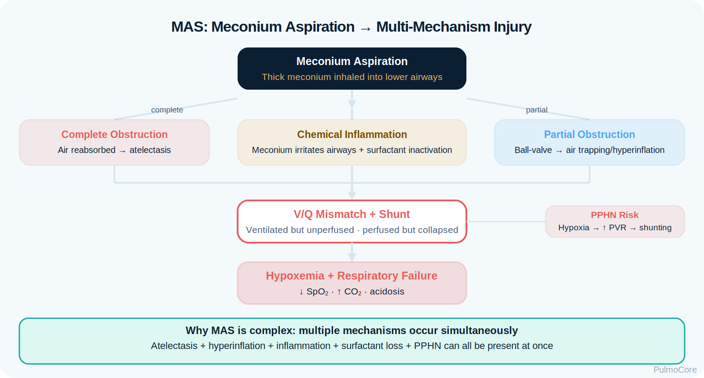
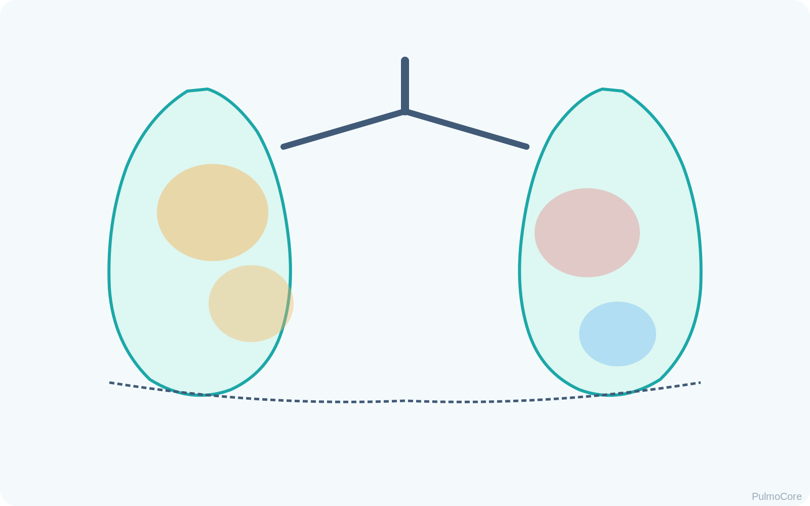
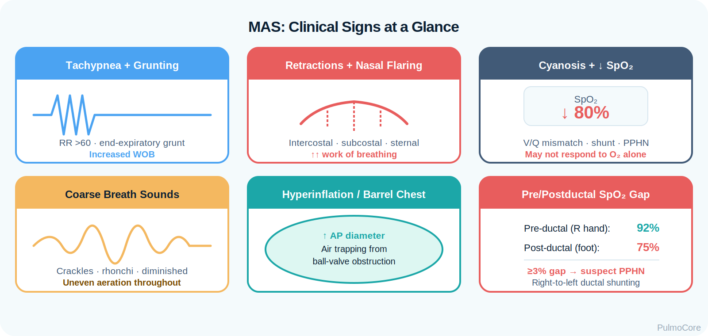
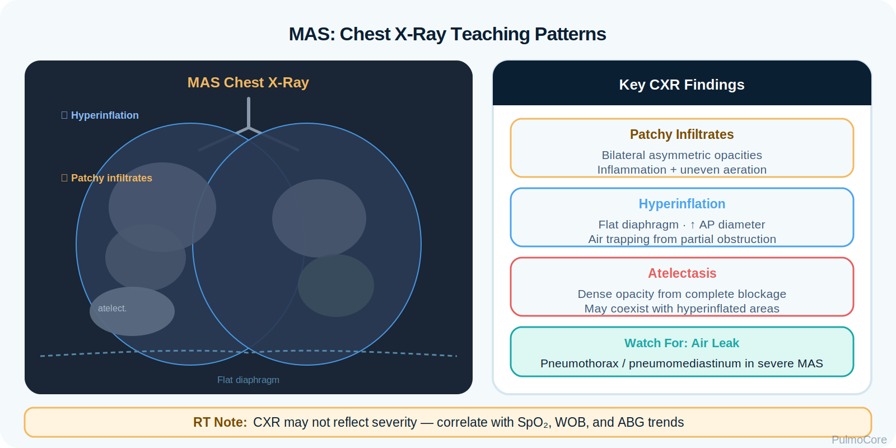

RT Clinical Connection
For RTs, MAS is not just “dirty fluid.” It is a neonatal gas exchange emergency where obstruction, atelectasis, hyperinflation, surfactant failure, and pulmonary hypertension can overlap in the same patient.
Meconium aspiration syndrome (MAS) is neonatal respiratory distress caused by aspiration of meconium-stained amniotic fluid. This module focuses on RT-level recognition, pathophysiology, oxygenation and ventilation priorities, complications such as air leak and persistent pulmonary hypertension of the newborn (PPHN), and escalation decisions.
By the end of this MAS module, learners should be able to connect meconium exposure, airway obstruction, chemical lung injury, surfactant dysfunction, V/Q mismatch, PPHN risk, and RT management priorities.
MAS occurs when a newborn aspirates meconium-stained fluid into the airway. The meconium can block airways, irritate lung tissue, inactivate surfactant, and trigger pulmonary vasoconstriction. The result can be mixed atelectasis and hyperinflation, severe V/Q mismatch, hypoxemia, and PPHN.
For RTs, MAS is not just “dirty fluid.” It is a neonatal gas exchange emergency where obstruction, atelectasis, hyperinflation, surfactant failure, and pulmonary hypertension can overlap in the same patient.
Immediately associate MAS with meconium-stained fluid, post-term or fetal-stress history, respiratory distress at birth, coarse/patchy CXR findings, air trapping, surfactant dysfunction, PPHN, and risk for pneumothorax.
Which statement best describes the primary respiratory problem in meconium aspiration syndrome?
MAS begins when meconium enters the newborn airway. Thick material can partially or completely obstruct airways. Partial obstruction may create a ball-valve effect with air trapping; complete obstruction may cause atelectasis. Meconium also triggers chemical pneumonitis, impairs surfactant, decreases compliance, and can worsen pulmonary vasoconstriction.

| MAS Change | What Happens | Why It Matters |
|---|---|---|
| Partial obstruction | Air enters more easily than it leaves. | Causes air trapping, hyperinflation, and pneumothorax risk. |
| Complete obstruction | Ventilation beyond the obstruction is blocked. | Causes atelectasis and shunt-like physiology. |
| Chemical pneumonitis | Meconium irritates airways and alveoli. | Increases inflammation, edema, and gas exchange problems. |
| Surfactant dysfunction | Alveoli become less stable and compliance falls. | Raises pressure needs and atelectasis risk. |
| PPHN physiology | Pulmonary vascular resistance remains high. | Right-to-left shunting can cause refractory hypoxemia. |
Mild MAS may show hypoxemia with respiratory alkalosis from tachypnea. Severe MAS can progress to respiratory acidosis when ventilation fails. Acidosis and hypoxemia worsen pulmonary vasoconstriction, which can intensify PPHN.
A newborn with MAS who has persistent low SpO₂ despite support, worsening acidosis, asymmetric chest movement, or sudden deterioration needs rapid reassessment for PPHN, pneumothorax, equipment issues, or need for escalation.
Click each hotspot to reveal how that mechanism contributes to MAS.

MAS is most associated with fetal stress and meconium-stained amniotic fluid, especially in term or post-term newborns. The RT should quickly connect the delivery history with current respiratory findings.
| Risk Factor or Context | Why It Matters | RT Focus |
|---|---|---|
| Meconium-stained amniotic fluid | Direct aspiration risk. | Prepare for focused neonatal respiratory assessment. |
| Fetal distress | May trigger gasping and meconium passage. | Anticipate respiratory compromise at delivery. |
| Post-term gestation | Meconium passage is more likely. | Watch closely for MAS signs. |
| Thick meconium | Higher obstruction burden. | Assess air movement, oxygen need, and x-ray pattern. |
| Perinatal hypoxia/acidosis | Promotes pulmonary vasoconstriction. | Monitor for PPHN and refractory hypoxemia. |
Choose the best category for each item, then check your answers.
MAS presentation ranges from mild tachypnea to severe respiratory failure. RT assessment should focus on work of breathing, oxygenation, ventilation, perfusion, neurologic tone, and response to support.
| Finding Type | What the RT May See |
|---|---|
| Delivery clues | Meconium-stained fluid, stained skin/nails/cord, fetal distress history. |
| Appearance | Tachypnea, grunting, nasal flaring, retractions, cyanosis, poor tone if severe. |
| Breath sounds | Coarse crackles/rhonchi, diminished areas, variable aeration. |
| Chest mechanics | Hyperinflation/barrel chest from air trapping or reduced expansion from atelectasis. |
| Oxygenation clues | Low SpO₂, pre/postductal saturation gradient, low PaO₂. |
| Ventilation clues | Rising PaCO₂, acidosis, apnea, fatigue. |

Do not treat MAS as a single-mechanism disease. A newborn can have airway obstruction, collapsed alveoli, hyperinflated regions, inflammation, low compliance, and pulmonary hypertension at the same time.
Diagnostic data helps determine severity, identify complications, and guide escalation. In MAS, the RT should integrate delivery history, physical assessment, oxygenation trend, ABGs, chest x-ray, and signs of PPHN.
| Finding | MAS Pattern |
|---|---|
| Patchy infiltrates | Inflammatory injury and uneven aeration. |
| Hyperinflation | Air trapping from partial obstruction. |
| Atelectasis | Complete obstruction or surfactant dysfunction. |
| Air leak | Pneumothorax or pneumomediastinum may complicate severe disease. |

| Pattern | Meaning |
|---|---|
| Low PaO₂ / low SpO₂ | V/Q mismatch, shunt physiology, or PPHN. |
| Respiratory alkalosis early | Tachypnea may lower PaCO₂ initially. |
| Respiratory acidosis | Ventilatory failure, fatigue, or severe obstruction. |
| Pre/postductal SpO₂ difference | May suggest right-to-left ductal shunting with PPHN. |
MAS severity is driven by oxygen need, work of breathing, ventilatory status, x-ray findings, and complications. A stable tachypneic newborn requires different support than a hypoxemic newborn with acidosis and suspected PPHN.
| Severity Level | Typical Pattern |
|---|---|
| Mild | Tachypnea or mild distress; modest oxygen need; improving trend. |
| Moderate | Persistent distress, retractions/grunting, increasing oxygen need, abnormal CXR. |
| Severe | Marked hypoxemia, acidosis, apnea/fatigue, PPHN concern, or air leak. |
A newborn with MAS has SpO₂ 94% on the right hand and 84% on the lower extremity despite oxygen support. Which complication does this pattern raise concern for?
The key question is not simply “Was meconium present?” The key question is whether the newborn can oxygenate and ventilate without worsening pulmonary vascular resistance or air leak.
| Red Flag | Why It Matters |
|---|---|
| Persistent hypoxemia despite support | May suggest severe V/Q mismatch, shunt, or PPHN. |
| Rising PaCO₂ or falling pH | Suggests worsening ventilation or fatigue. |
| Pre/postductal SpO₂ gradient | Supports right-to-left shunting concern. |
| Sudden deterioration or asymmetric breath sounds | Possible pneumothorax or tube/equipment problem. |
| Apnea, poor tone, bradycardia | Requires urgent neonatal resuscitation priorities. |
| High pressure needs with poor response | Escalation may be needed; monitor air leak risk. |
MAS management is supportive and escalation-based. The RT helps stabilize airway, breathing, oxygenation, ventilation, and pulmonary vascular physiology while watching for pressure-related complications.
| Intervention | When It Helps | RT Consideration |
|---|---|---|
| Warm, position, stimulate, assess | Initial newborn stabilization. | Follow neonatal resuscitation priorities. |
| Supplemental oxygen | Hypoxemia or increased oxygen need. | Titrate to neonatal targets per protocol and avoid prolonged extremes. |
| CPAP | Spontaneously breathing newborn with distress and recruitment need. | Monitor for worsening air trapping or pneumothorax. |
| Intubation/ventilation | Severe distress, apnea, poor ventilation, acidosis, or high oxygen need. | Use lung-protective pressures and monitor air leak. |
| Surfactant | Significant surfactant dysfunction or severe oxygenation need. | May improve compliance/oxygenation in selected severe MAS. |
| HFOV/iNO/ECMO referral | Refractory hypoxemia or severe PPHN. | Escalate with NICU/neonatal team. |
Escalate when oxygenation or ventilation worsens despite appropriate support, when PPHN signs appear, when acidosis develops, or when sudden deterioration suggests pneumothorax.
Select the steps in the best general order for a newborn with suspected MAS and respiratory distress.
Severe MAS can be complicated by PPHN and air leak. Hypoxemia and acidosis increase pulmonary vascular resistance, and positive-pressure support can worsen air trapping if obstruction is significant.
In severe MAS, persistent hypoxemia despite oxygen support should trigger PPHN thinking. Sudden deterioration after positive pressure should trigger pneumothorax thinking.
The RT is central to newborn stabilization, oxygen delivery, ventilation support, monitoring, airway equipment readiness, ABG interpretation, chest x-ray correlation, and escalation communication.
| RT Task | What to Assess or Do | Why It Matters |
|---|---|---|
| Assess oxygenation | SpO₂ trend, pre/postductal values, FiO₂ need, color/perfusion. | Detects hypoxemia and PPHN clues. |
| Assess ventilation | RR, apnea, PaCO₂, pH, chest movement, fatigue. | Identifies failure needing ventilatory support. |
| Evaluate breath sounds | Coarse sounds, diminished areas, asymmetry. | Guides obstruction/air leak concerns. |
| Support therapy | Oxygen, CPAP, ventilation, surfactant setup, iNO support per protocol. | Improves gas exchange while minimizing harm. |
| Communicate escalation | Report refractory hypoxemia, acidosis, air leak signs, rising pressures. | Supports timely NICU team decisions. |
This guided case reveals one clinical stage at a time. Learners make an RT decision, receive feedback, and then continue to the next stage.
A term newborn is delivered through thick meconium-stained amniotic fluid. The infant is tachypneic with grunting and central cyanosis.
Decision Question: What is the priority first action?
The infant remains tachypneic with retractions. CXR shows patchy infiltrates with areas of hyperinflation.
Decision Question: What pathophysiology best explains mixed hyperinflation and atelectasis?
Despite increasing oxygen support, the right hand SpO₂ remains 93% while the lower extremity SpO₂ is 84%. ABG shows worsening acidosis.
Decision Question: What complication should the RT strongly suspect?
After positive-pressure support, the infant suddenly has worsening SpO₂, increased distress, and decreased breath sounds on one side.
Decision Question: What should the RT urgently consider?
Answer each question to complete this activity. Answer choices shuffle each time the lesson opens.
A term newborn delivered through thick meconium develops tachypnea, grunting, retractions, and patchy infiltrates with hyperinflation on CXR. What diagnosis is most consistent?
Which MAS mechanism increases the risk for hyperinflation and pneumothorax?
A newborn with MAS has persistent hypoxemia and a lower postductal SpO₂ than preductal SpO₂. Which complication is most concerning?
During ventilatory support for severe MAS, which RT concern is most important?
MAS is neonatal respiratory distress caused by aspirated meconium that obstructs airways, irritates lung tissue, impairs surfactant, and can worsen pulmonary vascular resistance.
Complete obstruction blocks ventilation and can collapse distal lung units. Partial obstruction creates a ball-valve effect that traps air and causes hyperinflation.
Hypoxemia and acidosis can keep pulmonary vascular resistance high. Blood may shunt right-to-left and bypass oxygenation, causing refractory hypoxemia.
When the right hand saturation is higher than lower extremity saturation, right-to-left ductal shunting and PPHN should be considered.
Air trapping from partial obstruction plus positive pressure can increase alveolar overdistention and air leak risk.
No. Current neonatal priorities focus on the infant’s breathing, heart rate, tone, and need for ventilation. Support oxygenation and ventilation based on clinical status and local neonatal resuscitation protocols.
Severe or refractory hypoxemia, worsening acidosis, suspected PPHN, or failure of conventional support may lead to surfactant, HFOV, inhaled nitric oxide, or ECMO center consultation.
Meconium aspiration syndrome is a neonatal respiratory disorder caused by aspirated meconium-stained fluid. It produces obstruction, chemical pneumonitis, surfactant dysfunction, atelectasis, hyperinflation, V/Q mismatch, hypoxemia, and possible PPHN.
Terms are stored once and can power inline tooltips, glossary entries, and flashcards.
Click the card to flip it. Use Term → Definition or Definition → Term mode. Mark known cards to move them into the completed pile.